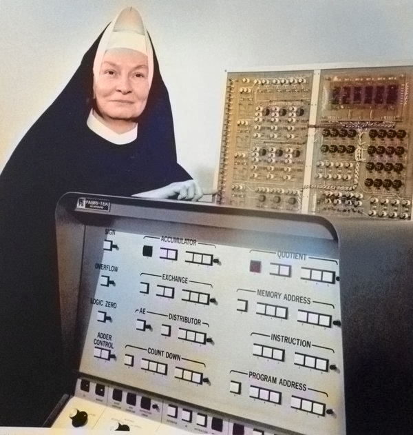
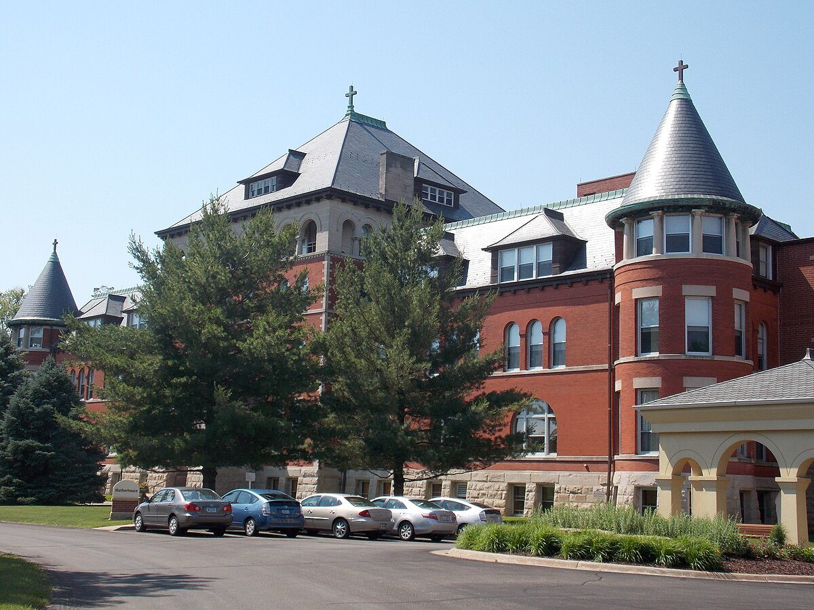
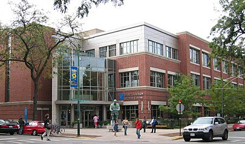

Biografia
Mary Kenneth Keller (1914–1985) fue una monja, educadora e
investigadora que marcó un hito en la historia de la computación. Algunos
puntos clave de su vida son:
- Trayectoria Académica y Profesional:
Fue una de las primeras mujeres en obtener un doctorado en ciencias de
la computación en los Estados Unidos, lo que rompió barreras en un campo
hasta entonces dominado por hombres. Su sólida formación en matemáticas
y educación le permitió explorar nuevas metodologías para enseñar
conceptos computacionales.
- Vocación y Servicio:
Como miembro de una congregación religiosa, combinó su compromiso
espiritual con su pasión por la educación. Esto la llevó a involucrarse
en proyectos que buscaban hacer la informática accesible y comprensible,
incluso en instituciones de artes liberales.
- Innovación en la Educación:
Keller se destacó por su visión de integrar la informática en currículos
educativos tradicionales. Su labor pionera impulsó el desarrollo de
programas y cursos que hoy se consideran esenciales en la formación en
ciencias de la computación.

 